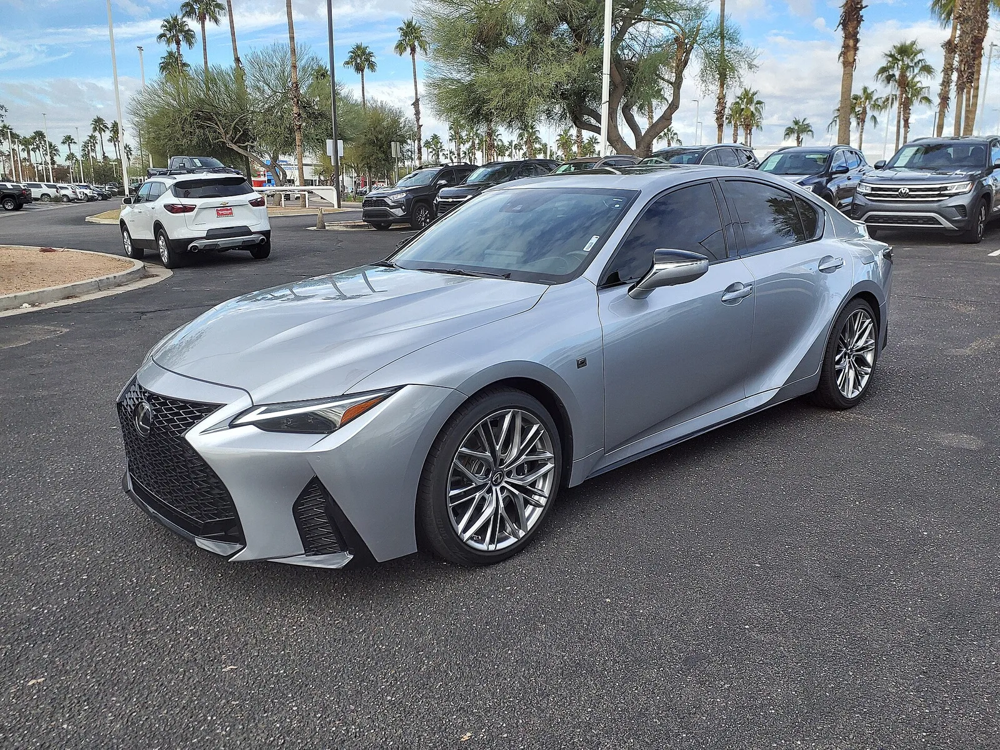
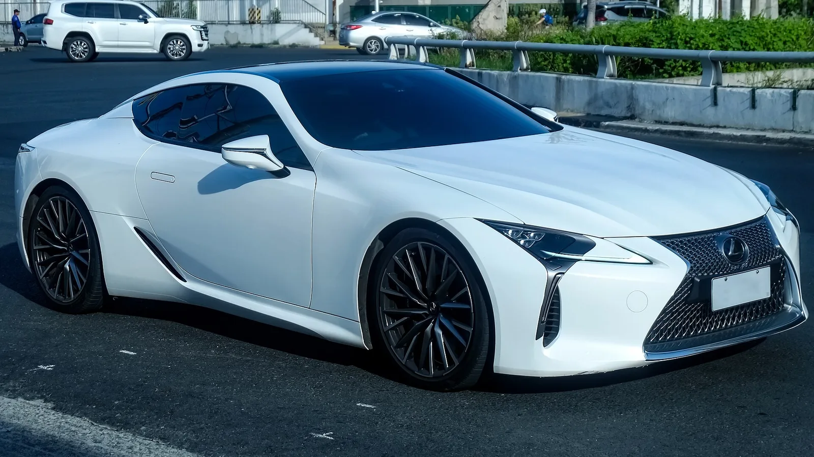
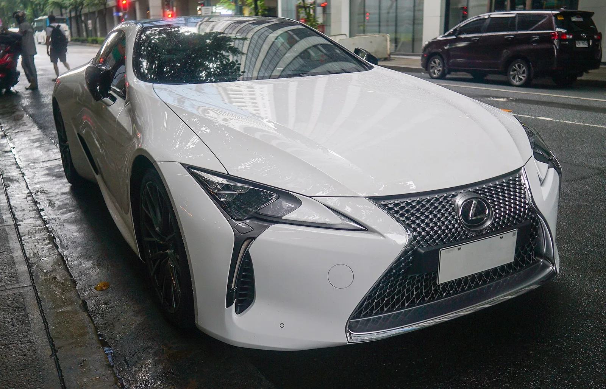

▲ 렉서스 LC 500. 2018년 등장 이후 약 9년 만에 생산이 끝났다
렉서스가 LC의 단종을 공식 발표했습니다.
2026년형이 마지막이고, 생산은 8월에 끝났습니다.
그런데 이 소식의 무게는 차 한 대에 그치지 않습니다. 미국 시장에서 토요타 그룹의 V8이 함께 사라지기 때문입니다.
1. 무엇이 끝났나
렉서스 LC는 2018년에 나왔습니다. LF-LC 콘셉트를 거의 그대로 양산으로 옮긴 차로, 공개 당시 "콘셉트카가 그대로 나왔다"는 반응을 받았습니다.
| 시점 | 내용 |
|---|---|
| 2026년 1월 | 딜러에 단종 사전 통보 |
| 2026년 8월 | 공식 발표 및 생산 종료 |
| 현재 | 딜러 재고분이 마지막 구매 기회 |
2026년형이 마지막 연식입니다. 지금 남아 있는 신차 재고가 팔리면 그것으로 끝입니다.
2. 진짜 사라지는 것은 엔진이다
LC500에 들어간 5.0리터 V8은 렉서스가 오래 써온 엔진입니다. 2008년 IS F에 처음 얹힌 뒤 여러 F 모델을 거쳤습니다.

▲ IS 500 F 스포츠 퍼포먼스는 2025년형을 끝으로 먼저 사라졌다 ⓒ Wikimedia Commons
| 모델 | 상태 |
|---|---|
| RC F | 2025년형까지 |
| IS 500 F 스포츠 퍼포먼스 | 2025년형까지 |
| LC 500 | 2026년형까지 — 마지막 |
LC가 빠지면 미국 시장에서 토요타 그룹에는 V8 모델이 남지 않습니다. GR GT가 나올 때까지 공백이 생깁니다.
📍 왜 자연흡기 V8이 귀해졌나
배출가스와 연비 규제가 강해지면서 대배기량 자연흡기 엔진은 유지 비용이 커졌습니다. 같은 출력을 작은 배기량 + 과급이나 전동화로 낼 수 있게 되면서, 판매량이 크지 않은 엔진을 규제에 맞춰 계속 개량할 이유가 줄었습니다. 남은 가치는 성능이 아니라 소리와 반응 쪽입니다.
3. 렉서스 전체 흐름과 맞물린다
이번 단종은 갑작스러운 결정이 아닙니다. 렉서스는 순수 가솔린 모델을 순차적으로 정리해 왔습니다.
일본 내수에서는 NX250(2.5L 자연흡기)과 NX350(2.4L 터보)의 판매 종료가 발표됐고, 플래그십 세단 LS500도 같은 흐름에 놓여 있습니다. 여기에 LC500까지 더해지는 구도입니다.
| 모델 | 엔진 | 비고 |
|---|---|---|
| NX250 | 2.5L 자연흡기 | 국내 미출시 |
| NX350 | 2.4L 터보 | 국내 미출시 |
| LS500 | 3.5L V6 트윈터보 | 국내 판매 중 |
| LC500 | 5.0L V8 | 생산 종료 |
LS500까지 빠지면 렉서스코리아가 파는 차는 전부 전동화 모델이 됩니다. 하이브리드, 플러그인 하이브리드, 순수 전기만 남습니다.
4. 후속은 무엇인가
LC의 자리를 이어받을 모델로 새 LFA가 예고돼 있습니다. 렉서스의 새 플래그십이 될 전망이며, 전동화 파워트레인이 유력하게 거론됩니다.
같은 자리를 채우되 성격은 달라집니다. LFA라는 이름은 렉서스가 2010년대 초 만든 4.8L V10 슈퍼카에서 왔습니다. 그 이름이 전동화 시대에 다시 쓰인다는 것 자체가 방향을 보여줍니다.

▲ 디자인은 콘셉트카를 거의 그대로 옮겨온 것으로 평가받았다 ⓒ Wikimedia Commons

▲ 자연흡기 V8을 얹은 그랜드 투어러는 앞으로 나오기 어렵다 ⓒ Wikimedia Commons
5. 마지막 물량을 볼 사람에게
✅ 단종 직전 모델을 살 때
· 마지막 연식은 완성도가 높은 편 — 초기 결함이 정리된 상태
· 반면 편의·안전 사양은 최신 세대에 뒤질 수 있다
· 부품 수급은 법정 기간은 보장되나 이후가 변수
· 잔가는 두 갈래 — 흔한 차는 불리, 상징성 있는 마지막 사양은 반대로 버티기도 한다
· 국내 판매 모델이 아니라면 정비 네트워크를 먼저 확인
네 번째 항목이 이 차의 관전 포인트입니다. 자연흡기 V8을 얹은 그랜드 투어러는 앞으로 나오기 어렵습니다. 수요가 얇지만 대체 불가한 조합이라, 시간이 지나면 시세가 다르게 움직일 여지가 있습니다.
6. 정리
렉서스가 2026년 8월 LC의 단종을 공식 발표했습니다. 2026년형이 마지막이고 생산은 이미 끝났습니다. 2018년 출시 이후 약 9년입니다.
사라지는 것은 차 한 대가 아니라 엔진 계보입니다. 2008년 IS F부터 이어진 5.0L V8이 RC F, IS 500에 이어 LC에서도 빠집니다.
미국 시장에서 토요타 그룹은 GR GT가 나올 때까지 V8 모델이 없습니다. LC의 자리는 전동화 파워트레인이 유력한 새 LFA가 이어받을 전망입니다.